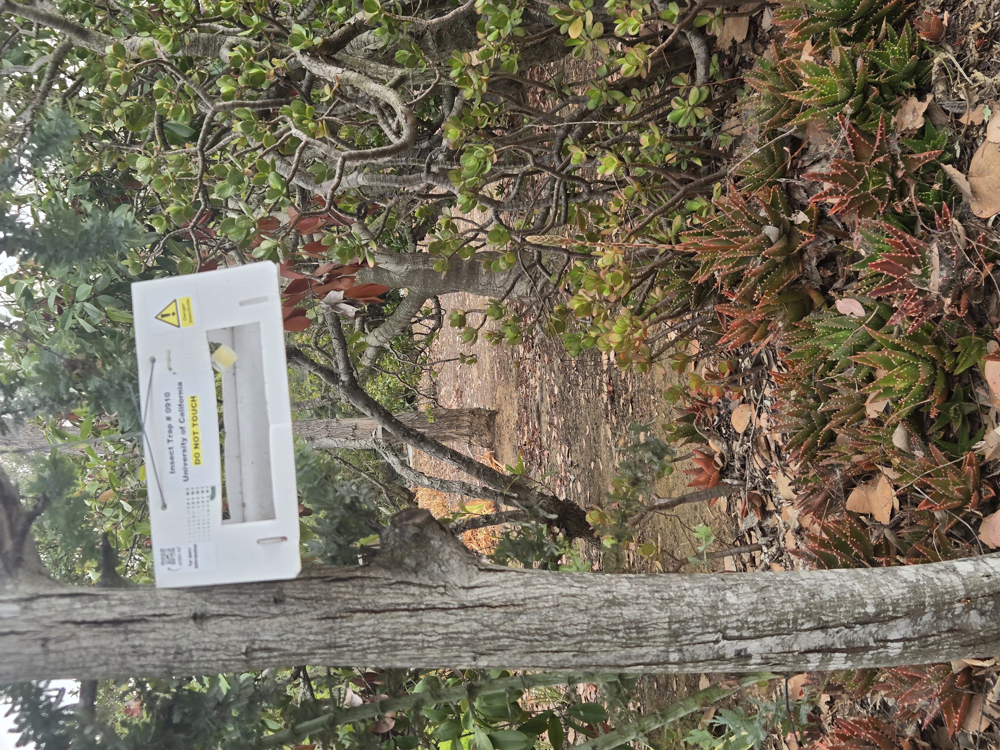

This week, San Diego Palm Protection spent time walking parts of Rancho Santa Fe observing mature Canary Island Date Palms (CIDPs), palm health conditions, local SAPW awareness efforts, and maintenance practices.
While many palms appeared healthy and well-maintained, several observations stood out as reminders that prevention, monitoring, and proper care matter long before visible decline becomes severe.

Not every palm observed appeared equally healthy. Compared to the healy CIDP on the right, the left is showing as trunk only after significant canopy loss. Significant changes in canopy structure may be worth monitoring more closely

UC monitoring traps continue to appear throughout North County, reflecting ongoing awareness and monitoring efforts related to South American Palm Weevil (SAPW).

Over-trimming, sometimes called a ?hurricane cut,? may leave palms stressed over time. Not only is the SAPW attracted to stressed CIDP's, maintaining fuller canopies is often just healthier for the tree.
What Homeowners May Wish To Watch For
- Crown thinning or uneven canopy structure
- Weak or distorted spear growth
- Sudden browning or missing upper fronds
- Signs of irrigation or nutrient stress
- Over-trimming or improper maintenance practices
Healthy palms are often the result of consistency over time. Early observation and preventative care may help avoid more expensive problems later.
Related resources: Palm Care in Rancho Santa Fe, Quarterly Palm Care, and Palm Stewardship Resources.